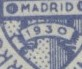

{kind=link}

Return To Catalogue - Spain overview - Spain 1900-1929
Note: on my website many of the
pictures can not be seen! They are of course present in the
catalogue;
contact me if you want to purchase it.
Train
1 c blue 2 c green 5 c red 10 c green 15 c blue 20 c violet 25 c red 30 c brown 40 c blue 50 c orange Train (different design)
1 P grey 4 P red 10 P brown Express stamp (inscription 'CORREO URGENTE'): modern electric locomotive

20 c red
Forgeries exist of this issue. If anybody has more information, please contact me!

5 c light brown 10 c red 25 c blue 50 c lilac 1 P light green 4 P grey
These stamps have been forged and are described in Focus on Forgeries by Varro E. Tyler:

Forgeries of these stamps
Luckily, they can easily be recognized by looking at the backside of the stamps. There should be a serial number on the genuine stamps. However, on the forgeries, this number is always A000,000 in blue or black. The genuine stamps have a real number. Furthermore, just below the '93' of '1930' a dot is touching the line below '1930' in the forgeries. The genuine stamps have no such dot.

Backside of a forged stamp.

Usually these stamps are perforated 12 1/2, but the 10 c, 25 c
and 1 P (all with inscription '1746-1828' exist imperforate as
this stamp.
Portrait of Goya, with inscription '1828 1928' 2 c olive 5 c violet 25 c red Portrait of Goya, with inscription '1746 1828' 1 c yellow 2 c brown 5 c lilac 10 c green 15 c blue 20 c lilac 25 c red 30 c red-brown 40 c blue 50 c red 1 P black With overprint 'URGENTE' (express stamp) 20 c lilac Nude painting 1 P violet 4 P black 10 P red-brown Airmail stamps 5 c red and yellow 5 c olive and blue 10 c black and green 15 c black and orange 20 c blue and red 25 c red (two shades on one stamp) 30 c brown and violet 40 c blue (two shades on one stamp) 50 c orange and green 1 P lilac and violet 4 P red and black 4 P black and grey 10 P brown and light brown With overprint 'URGENTE (express stamp) 20 c black and brown (exists with blue overprint?)
Ships
1 c dark brown
2 c olive (design as 1 c)
2 c olive (different design, as 10 c)
5 c red (design as 1 c)
5 c red (different design, as 10 c)
10 c green
15 c blue (design as 1 c)
20 c violet (design as 10 c)
25 c red (triangular stamp)
40 c blue (design as 25 c)
1 P black (design as 25 c)
With 'URGENTE' overprint (express stamp)
20 c lilac
Priest with boat
30 c dark brown, brown and blue
50 c violet and blue
Landing scene
4 P blue and black
10 P red and red-brown
Airmail ('CORREO AEREO')
5 c red (building)
5 c brown
10 c green (design as 5 c)
15 c violet (design as 5 c)
20 c blue (design as 5 c)
25 c red (portrait of Columbus)
30 c brown (portrait of Columbus, different design)
40 c blue (design as 25 c)
50 c orange (design as 30 c)
1 P violet (design as 25 c)
4 P green
10 P red-brown (portrait of Columbus, again different design)
Airmail ('CORREO AEREO IBERO AMERICA')
5 c red
10 c green
25 c orange
50 c green
1 P red
4 P blue
10 P lilac
This whole set was mainly issued for stamp collectors.
1 c green (arms) 2 c brown (map and church) 5 c olive (pavillon of Ecuador) 10 c green (pavillon of Colombia) 15 c dark blue (pavillon of Dominican Republic) 20 c violet (pavillon of Uruguay) 25 c red (pavillon of Argentine) 25 c red (pavillon of Chile) 30 c lilac (pavillon of Brasil) 40 c blue (pavillon of Cuba) 40 c blue (pavillon of Mexico) 50 c orange (pavillon of Peru) 1 P blue (pavillon of the United States) 4 P lilac (pavillon of Portugal) 10 P brown (lion) Express 20 c orange Airmail 5 c black 10 c olive 25 c blue 50 c grey 50 c black 1 P green 1 P red 4 P blue
Reprints (also imperforate) exist. This whole set was mainly issued for stamp collectors.
Imperforate stamp (probably a reprint)
The two types of the 40 c; on the left pointed left hand side of
the '4'; on the right blunt left hand side of the '4'.
2 c red-brown 5 c brown 10 c green 15 c grey 20 c violet 25 c red 30 c red 40 c blue (two types, '4' different at left hand side) 50 c orange Overprinted 'Republica Espanola' vertically (1931)


2 c red-brown (blue overprint) 5 c brown (red overprint) 10 c green (red overprint) 15 c grey (red overprint) 20 c violet (red overprint) 25 c red (blue overprint, I've seen an inverted overprint) 30 c red (blue overprint) 40 c blue (red overprint) 50 c orange (blue overprint)
Several local 'REPUBLICA' overprints exist: slanting in black or red for Madrid. 'REPUBLICA' straight for Barcelona and another slanting overprint in black for Barcelona (only on the 2 c?).

5 c black
5 c brown (Alhambra Fuente de los Leones) 10 c green (Mezquita de Cordoba) 15 c lilac (Toledo, puente de Alcantara) 25 c red (design as 10 c) 30 c olive (Dr. Garcia Y Santos) 40 c blue (design as 5 c) 50 c orange (design as 10 c) 1 P black (design as 15 c) 4 P lilac (Madrid, people celebrating) 10 P brown (design as 4 P) Airmail 5 c brown 10 c green 25 c red 50 c blue 1 P violet 4 P black
These stamps were also issued in slightly different colors with overprint 'Oficial' (postage stamps) or 'OFICIAL' (for the airmail stamps).
1 c green on green (arms)
2 c brown (design as 1 c)
5 c black (design as 1 c)
10 c green on green (design as 1 c)
15 c green on blue (monks discussing)
20 c lilac on lilac (statue of the black Madonna)
25 c red (head of statue)
30 c red (design as 20 c)
40 c blue on blue (monastry)
50 c orange (design as 15 c)
1 P black on blue (design as 25 c)
4 P lilac on red (design as 40 c)
10 P brown on brown (design as 25 c)
Express stamp ('CORRESPONDENCIA URGENTE')
20 c red on red (horse with wings)
Airmail
5 c brown
10 c green on green
25 c red on red
50 c orange
1 P black on blue


2 c red-brown (B.Ibanez) 5 c dark brown (P.Margall) 5 c black (B.Ibanez, 1934) 10 c green (G.Costa) 15 c blue (N.Salmeron) 15 c blue (C.Arenal, 1935) 15 c dark green (C.Arenal, 1936) 15 c yellowish green (C.Arenal, 1937) 20 c lilac (P.Margall) 25 c red (P.Iglesias) 30 c red (P.Iglesias) 30 c red (P.Iglesias, different type, 1936) 30 c red (P.Iglesias, different type, lying format) 30 c red (Azcarate, 1935) 40 c blue (E.Castelar) 40 c red (E.Castlelar, 1937) 50 c orange (N.Salmeron) 50 c blue (N.Salmeron, 1935) 60 c green (E.Castelar) Overprinted 'VEULO MANILA MADRID 1936 ARNAIZ CALVO' 30 c red (on different type of 1936)

50 c blue with local overprint applied during the civil war
1 P black (Cuenca) 4 P red (Alcazar) 10 P brown (Toledo)
25 c red (another shade was issued in 1935)
20 c red
Inscription 'REPUBLICA ESPANOLA CORREOS'

1 c green (newspaper stamp, imperforate) 2 c light brown 5 c brown 10 c light green 15 c green 20 c violet 25 c lilac 30 c red Surcharged '45 CENTIMOS' (red) on 1 c green With inscription 'ESTADO ESPANOL CORREOS' 1 c green (imperforate or perforated)


With local overprints, applied during the Spanish civil war.
30 c brown
10 c green (Mariana Pineda) 30 c red (G.M. de Jovellanos)
15 c green 30 c red (portrait of poet) 50 c blue (design as 30 c) 1 P black
2 P blue
30 c red
1 c red (portrait of M.Moya)
2 c red-brown (portrait of T.L. de Tena)
5 c brown (portrait of F.Rodriguez)
10 c green (portrait of A.Lerroux)
15 c blue (design as 1 c, but slightly larger)
20 c violet (design as 2 c, but slightly larger)
25 c lilac (design as 5 c, but slightly larger)
30 c red (design as 10 c, but slightly larger)
40 c orange (design as 1 c, but slightly larger)
50 c blue (design as 2 c, but slightly larger)
60 c olive (design as 5 c, but slightly larger)
1 P black (design as 10 c, but slightly larger)
2 P blue (school)
4 P red (design as 2 p)
10 P red-brown (design as 2 p)
Express stamp
20 c red ('CORREOS URGENTE')
Airmail
1 c red (eagle)
2 c red-brown (press building with airplane)
3 c brown (design as 1 c)
10 c green (design as 2 c)
15 c blue (school with helicopter)
20 c violet (design as 1 c)
25 c lilac (design as 2 c)
30 c red (design as 15 c)
40 c orange (design as 1 c)
50 c light blue (design as 15 c)
60 c olive (design as 2 c)
1 P black (design as 15 c)
2 P blue (Don Quichotte)
4 P red (design as 2 P)
10 P lilac (design as 2 P)
10 c black 15 c green Overprinted 'CORREO AEREO' 10 c red (overprint blue) 15 c blue (overprint red)
2 c brown (inscription 'REPUBLICA ESPANOLA' on top)
2 c brown (inscription 'ESTADO ESPANOL')
Overprinted
'45 CENTIMOS' (blue) on 2 c brown ('REPUBLICA ESPANOLA')
50 c blue
30 c red
40 c red 45 c red 50 c blue 60 c blue

5 c brown 10 c red 10 c green 10 c blue 15 c green 15 c violet
Exists with local overprints applied during the Spanish civil war.

With plain background 15 c black 20 c violet 25 c red 30 c red 40 c orange 50 c blue 60(?) c yellow 70 c blue 1 P blue 4 P red With dotted background 20 c violet 25 c red 30 c red 40 c violet 50 c blue 1 P blue
5 c black 10 c light brown 15 c green 20 c violet 25 c lilac 30 c red 35 c blue 40 c grey 45 c red 45 c blue 50 c grey 60 c orange 70 c blue 1 P black 2 P brown 4 P lilac 10 P brown
40 c light brown 75 c blue 90 c grey 1.35 P lilac
5 c olive 15 c green 50 c light brown 80 c red
25 c orange 30 c green 35 c green 40 c brown 45 c red 50 c lilac 70 c violet 75 c blue 1 P red
10 c red 15 c light brown 20 c green 25 c black 30 c olive 40 c violet 50 c grey 60 c black 70 c green 80 c dark green 1 P orange 1.40 P red 1.50 P blue 1.80 P light green 2 P red 2 P violet 3 P blue 4 P red 5 P brown 6 P grey 7 P blue 8 P violet 10 P green 12 P green 20 P red
Stamps - Briefmarken - Timbres-Poste - Postzegels - Francobolli - Estampillas
{kind=link}